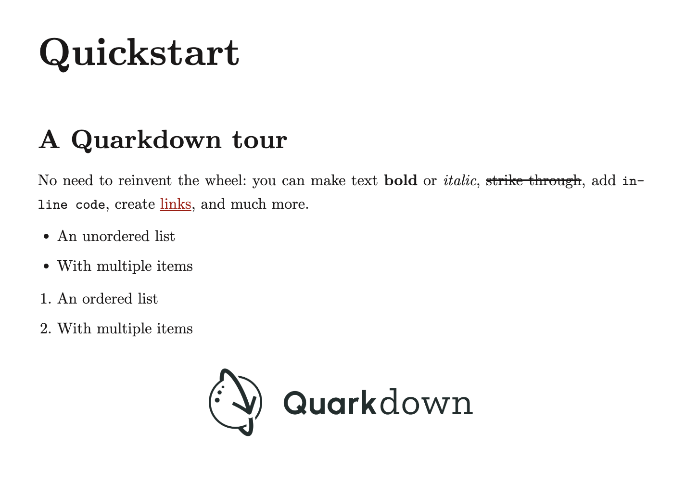
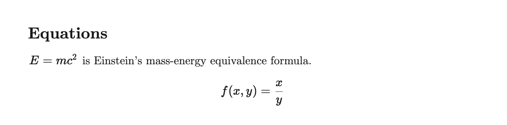
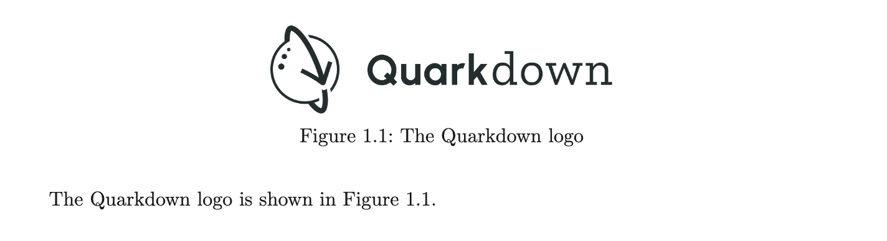

/

本页目录
快速开始
欢迎使用 Quarkdown！本指南将带你了解创建第一篇文档所需的主要功能。
提示：如果你使用 VS Code，我们强烈推荐安装官方 Quarkdown 扩展。
本指南提供概览，不会深入每一个细节。每个小节都包含指向其他维基页面的链接，你可以在那里了解特定功能的更多信息。
创建文档
参考：项目创建器
要创建一个新文档，请在终端中运行项目创建器：
quarkdown create my-document该命令会创建一个名为 my-document 的新文件夹。如果你想改用当前工作目录，可以省略名称。
对于本快速开始，我们推荐以下选项：
- 项目名称：
Quickstart - 作者：<你的名字>
- 文档类型：
plain - 文档语言：
English
项目创建完成后，在你喜欢的文本编辑器中打开 my-document.qd。如果你想从头开始，可以删除第一节中已有的内容。
## Quickstart
- Welcome to [Quarkdown](https://quarkdown.com)!
- This is the starting point of your document.
- ...选择文档类型
参考：文档类型
在初始设置期间，你可以从以下选项中选择一种文档类型：
plain：连续的流式布局，类似 Notion 或 Obsidian，非常适合知识管理与网页浏览。paged：带有分页符的传统文档布局，非常适合 PDF。slides：带有交互式导航的演示格式。docs：带有侧边栏与目录的文档格式，非常适合知识库与维基。本维基本身就是一个docs文档。
选择主题
参考：主题
主题分为两组：配色主题定义文档的配色方案，而布局主题设定布局的总体结构规则。
.theme {paperwhite} layout:{latex}一些流行的组合包括：
paperwhite + latex：干净的学术外观（这是默认设置）darko + minimal：带有极简样式的暗色主题galactic + hyperlegible：本维基所使用的主题，字体高度可读beaver + beamer：学术演示风格
有关可用主题的完整列表，请参阅主题 。
编译
参考：编译器
编译文档，以确保一切按预期工作：
cd my-document
quarkdown c main.qd你应该会在 output 目录中看到 HTML 输出。
要导出为 PDF，请添加 --pdf 标志：
quarkdown c main.qd --pdf有关 PDF 导出及其要求的更多信息，请参阅PDF 导出 页面。如果你是通过包管理器或安装脚本安装的 Quarkdown，应该已经准备就绪。
实时预览
要启动实时预览，请在编译命令后追加 -p（预览）与 -w（监视）：
quarkdown c main.qd -p -w这会启动默认浏览器。要使用不同的浏览器，请用 --browser 选项指定，例如 --browser chrome。
如果你在 VS Code 中使用 Quarkdown 扩展，可以点击放大镜按钮或按下 Ctrl/Cmd+Shift+V 来启动实时预览。
标记语法
Quarkdown 构建于 Markdown 之上，并包含若干 GFM 扩展。要尝试基础标记语法，请将以下内容追加到你的文档中并进行试验：
### A Quarkdown tour
No need to reinvent the wheel: you can make text **bold** or *italic*,
~~strike through~~, add `inline code`,
create [links](https://quarkdown.com), and much more.
- An unordered list
- With multiple items
1. An ordered list
2. With multiple items

有关 Markdown 基础知识的复习，请参阅 markdownguide.org。
图片尺寸
你可能已经注意到，上例中的图片显得过大。Quarkdown 克服了这一广为人知的 Markdown 限制，允许你指定图片尺寸：
!(50%)[Logo](image/logo.png)现在图片的尺寸就合适了。

这将图片宽度设置为可用宽度的 50%，同时保持宽高比。支持的单位包括 px、pt、cm、mm、in 和 %。如果省略单位，Quarkdown 会假定为 px。
要同时指定宽度与高度：
!(6cm 2cm)[Logo](image/logo.png)要仅指定高度：
!(_ 2cm)[Logo](image/logo.png)插图
参考：插图
当一张图片独立存在，与其他内容相互隔离时，它会自动变成一个插图。插图居中显示，并且可以拥有标题。
以之前的图片为例：
!(50%)[Logo](image/logo.png)你可以通过追加用引号包裹的标题来添加标题：
!(50%)[Logo](image/logo.png "The Quarkdown logo")
方程与公式
参考：TeX 公式
你可以使用 $ expression $ 语法来包含 TeX 方程。注意空白字符是有影响的。
将以下内容添加到文档底部：
#### Equations
$ E = mc^2 $ is Einstein's mass-energy equivalence formula.
$ f(x, y) = \frac{x}{y} $注意，第二个方程虽然使用相同的语法，却显示在自己单独的一行且居中。就像插图一样，孤立的方程会自动变成块级方程。

函数调用语法
参考：函数调用语法
在探索更多功能之前，让我们先看看 Quarkdown 的函数调用语法。
函数调用以句点开头，并使用花括号表示参数。参数可以是位置参数，也可以是命名参数：
.pow {5} to:{2} is a mathematical operation.函数调用可以是行内或块级，取决于它们出现在其他内容内部还是独立存在。
块级函数调用还支持缩进的块级参数，它始终对应于函数的最后一个参数：
.align {center}
This multi-line paragraph is the block argument,
and it's now centered in the document.你可以将多个函数调用链接在一起，其中一个的输出成为下一个的第一个参数：
示例 1
.sqrt {10}::round::multiply {2}6
提示：你可以在文档中找到全部可用函数的完整列表。
变量
参考：变量
使用 .var 函数定义变量，并像其他任何函数一样访问它：
.var {name} {John}
My name is .name要更改变量的值，用新的参数调用它即可：
.name {Jane}自定义元素
你可以使用 .function 定义自定义函数。函数是可复用的组件，封装了逻辑与内容。在本小节中，我们创建一个生成*示例（Example）*盒子的函数，这在教育类文档中很常见。
首先定义一个不带参数的函数：
.docauthors
- ...
.function {example}
.box {Example} type:{tip}
This is my example!
## Quickstart
...现在调用它：
## Quickstart
.example
...调用 .example 会生成一个格式良好的盒子。
让我们通过为盒子内容添加一个参数来增强该函数。参数的语法为 param1 param2 param3:。
.function {example}
content:
.box {Example} type:{tip}
.content相应地更新调用：
.example
This is my example!
恭喜！你使用盒子 创建了第一个可复用元素。还有更多布局工具可用，例如容器 与堆栈 。
有关自定义元素的高级样式，你可以使用 CSS 规则。更多信息请参阅 CSS 。
为了简单起见，我们先暂时移除该函数调用：
- .example - This is my example!
样式化元素
你可以改变内置 Markdown 元素（例如标题与段落）的外观与行为。Quarkdown 提供了一种类似于 Typst 的 #show 规则的机制，基于 .extend 函数，用来拦截并自定义支撑这些元素的原语函数。
例如，要让所有 2 级标题显示在青蓝色背景上：
.extend {heading} where:{depth: .depth::equals {2}}
.super background:{teal} foreground:{white}现在每一个 ## Heading 都会以新样式渲染，而其他层级保持不变。.super 会调用原始函数，并可选择性地覆盖其任意参数。
要为所有外部链接添加一个图标，你可以拦截 .link 原语函数，并为其内容添加一个图标 ：
.extend {link} where:{url: .url::startswith {https://quarkdown.com}::not}
content:
.super
.content .icon {box-arrow-up-right}要将所有段落中的 “Quarkdown” 一词变为斜体，你可以使用 .match 函数：
.extend {paragraph}
content:
.super
.content::match {Quarkdown}
*.1*在上一个片段中：
content是从.paragraph函数拦截到的参数；.content::match {Quarkdown}会在段落内容中查找模式 “Quarkdown”，并对其应用转换*.1*，该转换使匹配到的文本变为斜体。.1是一个隐式 lambda 参数 ；.super以修改后的内容作为其主体参数被调用。
对于更复杂的样式需求，你可以通过 .css 使用 CSS 规则来定位特定元素并应用自定义样式，以及使用 .cssproperties 自定义全局属性。
编号
参考：编号
许多文档，尤其是学术类文档，都需要对章节、插图、表格、公式与代码等元素进行编号。在 Quarkdown 中，你可以使用 .numbering 函数来实现这一点。
注意：类型为
paged的文档默认启用了编号。
在文档顶部、内容开始之前添加编号方案：
.docauthors
- ...
.numbering
- headings: 1.1.1
- figures: 1.1
.function {example}
...
## Quickstart
...这种类似 YAML 的语法表示一种字典 数据类型。

编号格式的有效符号为：
1表示十进制数字A表示大写字母a表示小写字母I表示大写罗马数字i表示小写罗马数字
任何其他字符都被视为字面量文本。
目录
参考：目录
较长的文档通常在开头包含一个目录，列出所有章节与子章节。
在 Quarkdown 中，只需在你希望目录出现的位置调用 .tableofcontents 函数：
.numbering
- ...
.tableofcontents
## Quickstart
...脚注
参考：脚注
脚注让你可以添加额外信息，而不会让正文变得杂乱。让我们给引言添加一个脚注：
### A Quarkdown tour
No need to reinvent the wheel: you can make text **bold** or *italic*,
~~strike through~~, add `inline code`,
create [links](https://quarkdown.com), and much more[^1].
[^1]: All Markdown features are supported in Quarkdown这是 GFM 脚注语法，Quarkdown 完全支持。Quarkdown 还支持紧凑脚注，让你可以在引用点就地、行内定义脚注：
and much more[^: All Markdown features are supported in Quarkdown].在 plain 文档中，脚注出现在引用旁边的页边距中，类似于边注。在 paged 与 slides 文档中，脚注出现在页面或幻灯片的底部。
交叉引用
参考：交叉引用
交叉引用让你可以引用文档中其他位置的编号元素。
首先，为目标元素添加一个 ID。然后使用 .ref {id} 函数引用它。
以我们的插图为例：
!(50%)[Logo](image/logo.png "The Quarkdown logo")为其添加 logo ID，并在正文中引用它：
!(50%)[Logo](image/logo.png "The Quarkdown logo") {#logo}
The Quarkdown logo is shown in .ref {logo}.
请参阅交叉引用 ，了解如何为章节、表格、公式与代码块等其他元素添加 ID。
页边距与计数器
在 paged 与 slides 文档中，你通常希望有一个页码，以帮助读者导航并了解自己在文档中的位置。
首先，通过将文档顶部的 .doctype 值改为 paged 来切换到 paged 文档类型：
- .doctype {plain}
+ .doctype {paged}默认页面格式为 A4。你可以使用
.pageformat函数更改它以及其他属性：.pageformat {letter} margin:{2cm}
现在在每页底部中央添加一个页码：
.docauthors
- ...
.pagemargin {bottomcenter}
.currentpage / .totalpages
.numbering
- ...现在每一页都会显示其自身的页码与总页数。
.pagemargin 函数可以向每一页添加任意类型的内容。所有可用的页边距位置，请参阅页边距内容 。
持久标题
参考：持久标题
页边距还可以在每一页上显示当前的章节标题。以下示例在左下页边距中显示当前的 1 级标题：
.pagemargin {bottomcenter}
...
.pagemargin {bottomleft}
.lastheading depth:{1}
.numbering
- ...多文件项目
参考：引入 vs. 子文档
将大型文档拆分为多个源文件主要有两种方式：引入（inclusion）与子文档（subdocuments）。
引入文件
.include 函数将另一个 Quarkdown 文件的内容插入到当前文件中。这种方式在 LaTeX 和其他标记语言中很常见，用于将大型文档拆分为更小的、更易管理的文件，例如每个章节一个文件。
对于我们的快速开始，我们可以将设置与内容拆分为两个独立的文件：
my-document.qd
- .docname {Quickstart}
- .doctype {paged}
- .doclang {English}
- .theme {paperwhite} layout:{latex}
-
- .docauthors
- - ...
-
- .pagemargin {bottomright}
- .currentpage / .totalpages
-
- .pagemargin {bottomleft}
- .lastheading depth:{1}
-
- .numbering
- - headings: 1.1.1
- - figures: 1.1
-
- .extend {heading}
- ...
+ .include {setup.qd}
+ .include {content.qd}
- .tableofcontents
-
- # Quickstart
-
- ...setup.qd
.docname {MyDocument}
.doctype {paged}
.doclang {English}
.theme {paperwhite} layout:{latex}
.docauthors
- Quarkdown
.pagemargin {bottomright}
.currentpage / .totalpages
.numbering
- headings: 1.1.1
- figures: 1.1
.extend {heading}
...content.qd
.tableofcontents
## Quickstart
...这里我们两次使用了 .include。对于数量更多的文件，可以考虑改用 .includeall：
.includeall
- setup.qd
- content.qd引用文件
参考：子文档
第二种方式使用子文档，这在知识库与维基中尤为常见。
子文档是共享相同设置与配置的内容独立单元。你可以通过链接从其他文档引用它们。
my-document.qd
- [Introduction](introduction.qd)
- [Chapter 1](chapter1.qd)
- [Chapter 2](chapter2.qd)
- [Conclusion](conclusion.qd)你还可以可视化由子文档构成的知识图谱：
.subdocumentgraph
静态资源
参考：HTML 静态资源
导出为 HTML 时，你可能希望将额外的文件与生成的文档一起发布，例如用于 GitHub Pages 的 robots.txt 或 CNAME。
为此，在主源文件旁创建一个 public/ 目录，并将文件放入其中：
- my-document.qd
- setup.qd
- content.qd
- public
- robots.txt
- CNAME
Quarkdown 会将 public/ 内的所有内容原样复制到输出目录的根目录，不做任何处理。
结语
恭喜！你已经完成了 Quarkdown 快速开始指南，现在熟悉了它的主要功能。你已经准备好创建自己的第一篇真实文档了。
从这里出发，你可以在本维基的其余部分以及文档中探索更高级的主题。